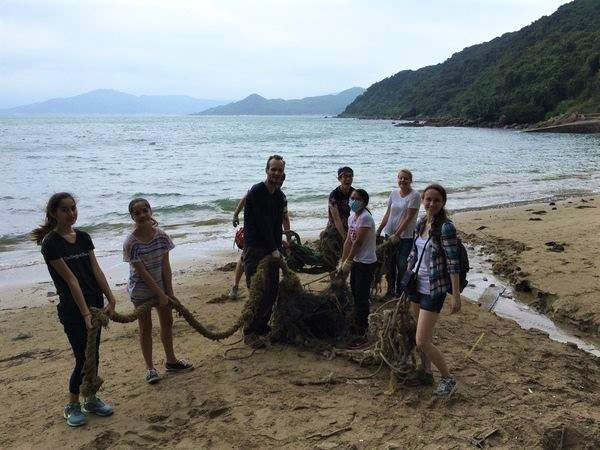

Our Mission
What is Cleaner Shrimps?

Cleaner Shrimps is a social media platform created to help bring people together for one simple purpose: picking up litter. All across the country and around the world, many proactive individuals and environmental organizations have taken it upon themselves to do something about the ever-increasing amounts of litter polluting our environment. Cleaner Shrimps gives users a way to meet likeminded neighbors, organize cleanup events, track their progress, find cleanup sites, recommend sites to others, and contribute to scientific research.